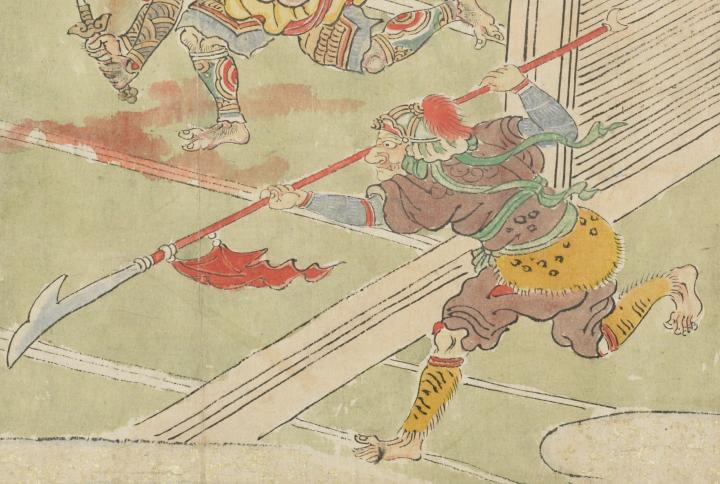

大きな薙刀をもつ鬼。重厚な兜をつけ、茶色の衣服に、虎皮の腰巻きを身につけている。走りながら、薙刀を前方に突き出している。
出典：親書誌：U426_nichibunken_0079：酒天童子絵巻；シュテンドウジエマキ／日付：2006／資源識別子：U426_nichibunken_0079_0013_0001
Copyright (c)2010- International Research Center for Japanese Studies, Kyoto, Japan. All rights reserved.